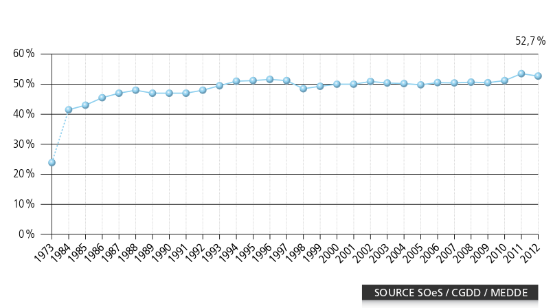

Un état des lieux des Systèmes Solaires Thermiques
Plan
Introduction
Les capteurs solaires thermiques, récupèrent l'énergie du soleil et la transforment en chaleur. Il ne faut pas les confondre avec les panneaux solaires photovoltaïques qui récupèrent aussi l'énergie du soleil, mais pour la convertir en électricité. L'énergie récupérée par les capteurs permet de produire de l'eau chaude sanitaire ou de chauffer une maison, généralement grâce à un plancher solaire direct (PSD).
Plusieurs arguments sont en faveur de l'utilisation des panneaux solaires thermiques :
- il est possible de réaliser un système solaire thermique (SST) efficace avec des matériaux courants et une technologie simple;
- L'énergie solaire est à la fois abondante, renouvelable, gratuite et sous-utilisée[1];
- Un SST bien réalisé pourra fonctionner plusieurs dizaines d'années.
- La conception du système demande un minimum de réflexion pour éviter les surchauffes d'été et donc la détérioration prématurée du système;
- Dans la grande majorité des cas, les SST doivent être couplés à un chauffage d'appoint classique (électricité, fioul, gaz, bois..) pour répondre aux besoins hivernaux;
Le principe
Le rayonnement du soleil est converti en chaleur par un capteur de couleur sombre. Celui-ci transmet cette chaleur à un fluide caloporteur qui, à son tour, la transmet à de l'eau sanitaire pour la chauffer. C'est un principe simple et facile à mettre en oeuvre : il suffit de laisser au soleil un fût peint en noir et rempli d'eau pour constater que la température de l'eau qu'il contient augemente. Les premières expériences en université sur ce type de système datent de la fin des années 1930.


Figure : À gauche, réclame pour le premier capteur solaire commercial (1891); à droite, un expérience de F.A. Brooks au centre d'expérience agricole de l'université de Californie (1936). Source : The Integral Passive Solar Water Heater Book, David A. Bainbridge, 1981
Les composants principaux
Le capteur
C'est un caisson isolé avec une face vitrée pour laisser passer le rayonnement solaire. Dans ce caisson se trouve un absorbeur metallique peint d'une couleur sombre. Ainsi, l'absorbeur est chauffé par le rayonnement solaire et la chaleur produite se trouve piégée et s'accumule dans le caisson : c'est l'effet de serre[2].
Les circuits primaire et secondaire
Cette chaleur accumulée est transmise à un fluide caloporteur, c'est-à-dire un fluide qui permet de transporter l'énergie, qui circule dans une série de tubes appelée le circuit primaire. Celui-ci permet d'amener la chaleur jusqu'à un système de stockage permettant de produire de l'eau chaude sanitaire (avec un cumulus, par exemple) ou du chauffage (des radiateurs muraux ou un plancher chauffant, par exemple).
Si la chaleur produite sert à chauffer de l'eau chaude sanitaire (dans le circuit secondaire), alors le fluide caloporteur est en est séparé (il reste dans le circuit primaire). En effet, sous les climats tempérés, on répond au risque de gel en ajoutant un liquide antigel dans le circuit primaire : du mono-propylène-glycol, comme dans le circuit de refroidissement des voitures.
Le stockage
l'énergie solaire est une ressource intermittente : elle dépend de la météo, de l'heure du jour et de la saison. Il faut donc pouvoir accumuler cette énergie pour l'utiliser plus tard. C'est le rôle des composants de stockage : les cumulus et les PSD.

Figures : À gauche, schéma d'un SST classique; à droite, schéma d'un capteur plan. Source : GIEC. Renewable Energy Sources and Climate Change Mitigation: Special Report of the IPCC, p. 337. Disponible ici.
Un état des lieux de la filière
Un enjeu de taille dans un contexte fragile
La maîtrise des moyens de chauffage est un enjeu très important si l'on réalise que les trois quarts de l'énergie utilisée par les ménages français dans leur résidence est utilisée pour le chauffage et l'eau chaude sanitaire[3].
D'autre part, la très grande majorité de l'énergie nécessaire au chauffage provient de sources d'énergies à la fois épuisables (voir la figure ci-dessous) et, qui plus est, importées[4]. Ceci rend l'espoir d'un prix constant complètement illusoire[5].
- 
Figures : À gauche, consommation d'énergie finale dans l’ensemble du secteur résidentiel à climat normal; à droite, Évolution du taux d'indépendance énergétique de la France. Source : ADEME, 2013. Chiffres clés du bâtiment, p.13 et 40. Disponible ici.
À cela s'ajoute un contexte social où "5,4 millions de français ont déclaré souffrir du froid du fait d’un système de chauffage insuffisant, d’une mauvaise isolation ou de contraintes financières"[6].
Ces trois arguments montrent l'importance de l'enjeu énergétique et plèdent en faveur de sources d'énergies locales et non épuisables, comme l'énergie solaire. Voyons maintenant l'état actuel du développement de la filière.
Un potentiel sous-exploité..
Le potentiel solaire est exploité de manière très différente entre les pays européens. Par exemple, la France reçoit en moyenne à peu près autant d'énergie solaire par unité de surface que l'Autriche (graphique de droite) alors qu'il y a environ 14 fois plus de capteurs solaires thermiques par habitant en Autriche ! Il y a donc beaucoup à faire dans quasiment tous les pays européens.
-
Figures[7] : Surfaces de parcs solaires thermiques en service par habitant en 2014. Une couleur plus sombre correspond à une surface plus importante. Source : EurObserv’ER, 2015 Baromètre solaire thermodynamique et solaire thermique, p. 17. Données disponibles ici.
-
Figure : Irradiation solaire moyenne annuelle par m2. Une couleur plus sombre correspond à une irradiation plus importante. Source : Šúri M., Huld T.A., Dunlop E.D. Ossenbrink H.A., 2007. Potential of solar electricity generation in the European Union member states and candidate countries. Solar Energy, 81, 1295–1305. Données disponibles ici.
Les causes ? D'après l'organisme européen d'observation des énergies renouvelables EurObserv'ER[8], quatres causes principales, donc trois purement politiques, doivent être remarquées :
- "Le marché a particulièrement pâti ces dernières années des politiques de “stop-and-go” en matière d’aides à l’investissement. [...]"
- "La filière solaire thermique souffre également de la concurrence de technologies alternatives (ballons d’eau chaude thermodynamiques, chaudières gaz à condensation, etc.) qui bénéficient également d’incitations et dont les coûts d’installation sont plus faibles. [...]"
- "Autre raison, la filière solaire thermique souffre depuis plusieurs années d’un déficit de communication, d’absence de mise en œuvre de campagnes institutionnelles menées au niveau national. [...]"
- "Enfin, la forte baisse du prix du pétrole et du gaz en 2014 et également durant le premier semestre 2015 n’a pas incité les propriétaires de maisons à opter pour un investissement solaire thermique. [...]"
En France par exemple, depuis 2008, il s'est installé de moins en moins de capteurs solaires chaque année. Le graphique ci-dessous, a été réalisé par Uniclima, le syndicat français des industries thermiques, aérauliques et frigorifiques, qui représente le trois quarts[9] des professionnels du secteur :
-

Figure : Évaluation du marché français des capteurs solaires thermiques (en m2) Source : Uniclima, 2014 Bilan 2013 et perspectives 2014 du génie climatique, p. 8. Disponible ici.
Pierre Amet, président de l'APPER (Association de Promotion des Énergies Renouvelables), relève en outre un problème de formation des installateurs qui les conduit à privilégier les solutions "plug-and-play" peu rentables :
Il ressort donc que les principales contraintes au développement de la filière solaire thermique sont politiques. Mais si, politiquement, le solaire thermique n'a pas "le vent en poupe", ce n'est pas à cause de ses qualités techniques. C'est ce que nous allons voir dans la partie suivante."Actuellement en France, on installe surtout du solaire thermique pour l'ECS (Eau Chaude Sanitaire solaire) parce qu'il est plus facile d'installer un CESI (Chauffe-Eau Solaire Individuel) : les fabricants proposent des kits tous prêts qui ne nécessitent pas de la part des installateurs des compétences très importantes. Le chauffage solaire, qui est beaucoup plus rentable, nécessite par contre des compétences multiples (dimensionnement, gestion de la surchauffe estivale, adaptation à l'installation existante...) et actuellement en France nous n'avons pas encore d'outils vraiment performants pour la formation des installateurs (la formation Qualisol Chauffage Solaire ne dure que quelques jours)." [10]
..malgré des avantages indéniables
Au delà des sources d'énergies locales, il faut aussi que les technologies qui nous permettent d'exploiter ces énergies ne soient pas dépendantes de matériaux ou de compétences importés. Les systèmes solaires thermiques utilisant des capteurs plans correspondent à la technologie solaire qui répond le mieux à ces critères. À titre de comparaison, le solaire photovoltaïque est majoritairement produit en Chine et sa fabrication nécessite une industrie lourde et, pour une partie des capteurs produits, des matériaux rares et présents eux aussi en Chine : les terres rares[11].
Le solaire thermique est, en comparaison, très simple à fabriquer. En témoigne les nombreuses instructions disponibles sur l'auto-construction de capteurs[12]. C'est cette simplicité qui fait sa robustesse : les systèmes sont constructibles et réparables par les particuliers qui s'en servent en utilisant des matériaux "de base" (tuyaux de cuivre ou d'acier, plaques de métal ou d'aluminium, isolants, peinture).


Figure : Des capteurs solaires thermiques et un cumulus auto-construits.
Dernier argument : celui du coût. Au delà de la dépense initiale, il faut toujours prendre en compte les frais qui viendront s'ajouter par la suite lors de l'utilisation et de la fin de vie du système. À l'heure actuelle, le meilleur moyen de diminuer le coût initial consiste à auto-installer et/ou auto-construire son système solaire thermique. L'APPER fait part de ce constat[13] :
Pour le coût global, la conclusion reste identique à condition que les utilisateurs soient formés aux problématiques et à l'entretien de leur système solaire thermique : c'est justement la possibilité offerte par l'auto-construction et l'auto-installation."Coût d’une installation de chauffage solaire ou combiné individuel: 20 à 40.000 € hors aides, et approximativement de 15.000 à 25.000 € aides déduites (installation réalisée par un professionnel compétent). Ce budget est trop important pour un grand nombre. Depuis plusieurs années, notre association [...] fait la promotion des systèmes solaires thermiques (chauffage, chauffe-eau) auto-construits et auto-installés. Avec notre groupement d’achat, l'installation d'un système solaire combiné (chauffage + eau chaude) en auto-installation, ne dépasse pas 8.000 à 10.000€. [...] Ce budget est de beaucoup inférieur au précédent, et l’auto-installateur ne fait en rien concurrence aux professionnels. Si on n’a que 8.000 à 10.000€ de budget, on ne peut en aucun cas profiter de leurs compétences."
Vers l'auto-construction et l'auto-installation ?
L'APPER, dans son livre[14], donne plusieurs exemples d'installations de SST utilisés à la fois pour la production d'eau chaude sanitaire et pour le chauffage. Les données sont réunies ici sous forme de tableau [15] :
| Numéro de l'installation | Coût de l'installation | Consommation énergétique annuelle antérieure | Économie d’énergie annuelle réalisée | Part d'énergie économisée | Économie annuelle financière | Durée de retour sur investissement |
|---|---|---|---|---|---|---|
| 1 | 6 800 € | 29 000 kWh | 12 000 kWh | 41 % | 2 500 € | 7 ans |
| 2 | 7 600 € | 36 360 kWh | 11 000 kWh | 49 % | 950 € | 8 ans |
| 3 | 2 500 € | 36 000 kWh | 19 000 kWh | 51 % | 1 800 € | 1,2 ans |
Ces exemples montrent qu'il est possible d'économiser une part importante de sa consommation énergétique sans que les coûts d'installation deviennent prohibitifs. Plus encore, l'auto-construction et l'auto-installation forment les utilisateurs, ce qui les rend moins susceptibles d'utiliser des matériaux de mauvaise qualité, d'endommager le système ou de devoir faire appel à un spécialiste pour l'entretien du système. C'est donc aussi le coût global qui se trouve réduit.
Dernier argument, les budgets sont complètement différents entre une auto-installation et une installation par un professionnel. Il n'y a donc pas de compétition entre les deux secteurs, comme le souligne l'APPER[16] :
"Ce budget [celui de l'auto-installation] est de beaucoup inférieur au précédent [celui de l'installation par un artisan], et l’auto-installateur ne fait en rien concurrence aux professionnels. Si on n’a que 8.000 à 10.000€ de budget, on ne peut en aucun cas profiter de leurs compétences."
Conclusion
Comme nous l'avons vu, les systèmes solaires thermiques possèdent des atouts techniques et environnementaux indéniables. Si la filière est aussi peu développée, c'est avant tout un problème politique, puisque (1) les incitations sont instables [17], (2) qu'elles bénéficient aussi à des technologies utilisant des métaux rares ou des combustibles non renouvelables et, qu'en outre, (3) les formations mises en place ne sont pas suffisantes.
L'auto-construction et l'auto-installation répondent en partie à ces problématiques puisqu'elles permettent de réduire les coûts d'installation, ce qui les rend compétitives, même par rapport à une installation réalisée par un professionnel et subventionnée. D'autre part, les formations peuvent être dispensées par un réseau d'acteurs locaux, comme c'est déjà le cas.
Références
- "Solar energy is the most abundant of all energy resources. Indeed, the rate at which solar energy is intercepted by the Earth is about 10,000 times greater than the rate at which humankind consumes energy." GIEC, 2012. Renewable Energy Sources and Climate Change Mitigation: Special Report of the IPCC, p. 337. Disponible ici.
- Voir ici pour une explication du phénomène.
- ADEME, 2013. Chiffres clés du bâtiment, p.42. Disponible ici.
- Le taux d'indépendance énergétique est en fait surestimé parce qu'il ne prend pas en compte que l'ensemble du combustible nucléaire est importé. Source : Connaissance des Énergies, 2012. Comment est calculée l’indépendance énergétique de la France ?, disponible ici.
- Il faut se rappeler du premier choc pétrolier des années 1970 et de la manière dont varie, encore aujourd'hui, le prix du pétrole.
- ADEME, 2013. Chiffres clés du bâtiment, p.46. Disponible ici.
- Ces graphiques ont été réalisés avec https://datamaps.github.io/.
- Source : EurObserv’ER, 2015. Baromètre solaire thermodynamique et solaire thermique, p. 12. Disponible ici.
- 77%, d'après sa propre estimation.
- Source : Pierre Amet, L'éditorial du président de l'Apper. Disponible ici.
- Frédéric Gaillard, 2011. Le soleil en face, p. 94-98.
- Beaucoup d'exemples peuvent notamment être trouvés sur le site de l'APPER : ici, ici et ici par exemple.
- APPER. Développer la filière solaire thermique: constats et propositions de l'Apper. Disponible ici.
- P. Amet, G. Gourdon, Y. Guern, R. Jules, E. Marguet, F. Mykieta, 2008. Installer un chauffage ou un chauffe-eau solaire, p. 65 à 136. Éditions Eyrolles. Disponible ici.
- Données arrondies et en considérant que 1L de fioul produit 10 kWh d'énergie. En considérant que les consommation, l'économie, le prix du fioul (0,86 €/L) et le prix de l'électricité (14 cts/kWh) restent constants.
- APPER. Développer la filière solaire thermique: constats et propositions de l'Apper. Disponible ici.
- D'autant qu'il n'est pas possible en France d'obtenir des aides pour une auto-installation, alors que c'est le cas dans d'autres pays.